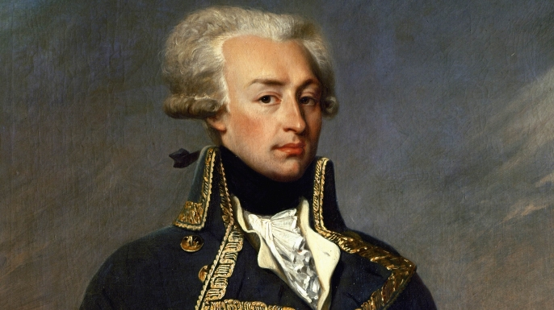
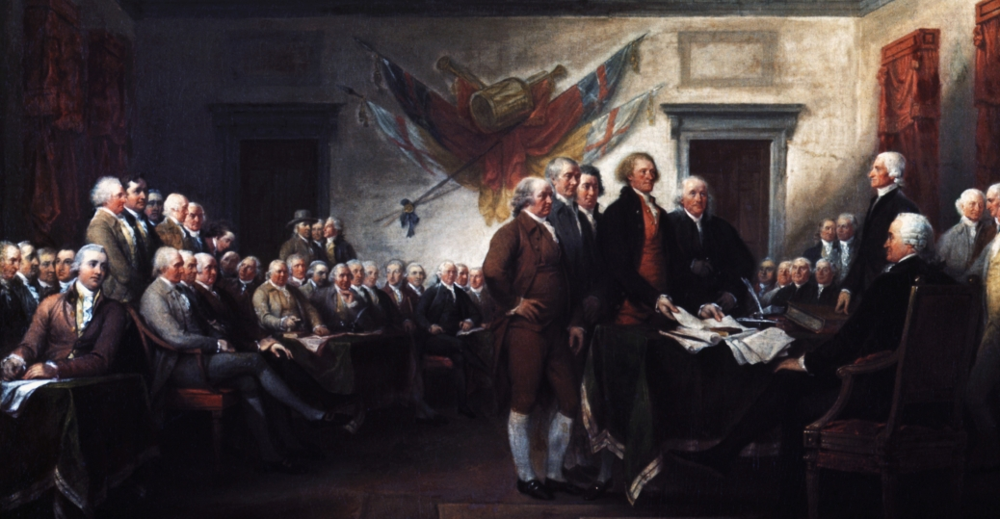
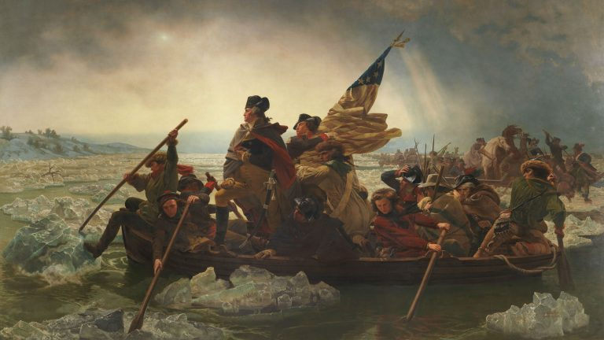
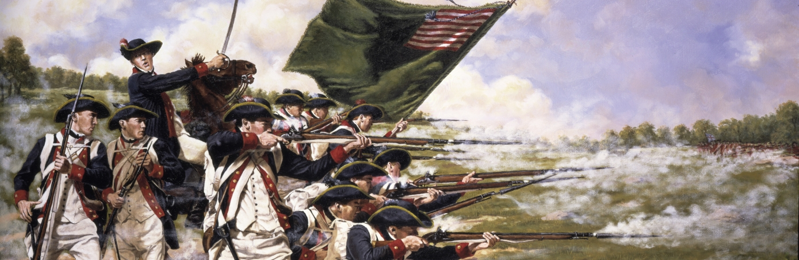

Война за независимость в США
К середине XVIII века в Новом свете на побережье Атлантики возникло 13 английских колоний. Население этих земель без учёта индейцев составляло примерно три миллиона человек. По разным причинам население Старого света перебиралось в Новый: это и аграрное перенаселение, это и обострение религиозных и социальных проблем и другие. Американская нация формировалась как смешение европейцев, главным образом жителей Великобритании, индейцев и африканцев. Новая культура возникла на базе английской и вобрала в себя черты коренных жителей Северной Америки.
Большим толчком к развитию был промышленный переворот в Англии. Торговля, мануфактурное производство, сельское хозяйство, основанное на фермерских хозяйствах – всё это развивалось семимильными шагами. На Юге основу экономики составляло плантационное хозяйство, где владельцы за счёт бесплатного рабского труда завезённых из Африки негров получали огромные прибыли. Коренное население (индейцы) истреблялось или вытеснялось в менее обжитые области.
Главой колонии являлся губернатор, назначаемый английским правительством, и при этом правом голоса в парламенте они не обладали.
Такие города, как Бостон или Нью-Йорк становились крупными культурными центрами. Развивалась система образования за счёт открытия новых вузов, печатных изданий, школ, библиотек.
Причины войны
Англия очень мало обращала внимания на заокеанские дела. Её правительство больше волновали внутренние проблемы и европейская политика. Колонии за время своего существования получили достаточный опыт самостоятельного управления, не соблюдали ограничения в торговле, действовавшие в метрополии. После завершения Семилетней войны в Европе увеличилось налоговое бремя на поселенцев. Введение в 1765 году закона о гербовом сборе только увеличило количество противников действующей власти. Этим налогом облагались вся печатная продукция, вся почта, все документы. Чуть ранее, в 1762 году английским королём был издан указ о запрете колонистам идти дальше, к западу Аллеганских гор. А в 1767 году товары, ввозимые из Англии, обложили новыми, ещё большими пошлинами.
Все эти меры, предпринимаемые метрополией по отношению к колониям, значительно усилили сепаратистские настроения населения. Был объявлен бойкот товарам из Англии. В Нью-Йорке был собран конгресс, участники которого объявили, что парламент не имеет права на обложение колоний налогами, поскольку представителей от колоний не было в парламенте. Таким образом, под давлением общественности в 1766 году закон о гербовом сборе был отменён. Но это лишь отсрочило начало войны.
Буржуазия и интеллигенция были во главе сопротивления, поскольку именно их интересы ущемлялись метрополией в первую очередь. К роялистам (тем, кто поддерживал действующую власть) относились духовенство, богатые купцы и плантаторы, крупные землевладельцы.
В ожидании войны
К 1773-1774 годам возмущение властью достигло наивысшей точки. Несмотря на снижение пошлин на чай, который ввозился в колонии, в расчёте на то, что его продажи увеличатся, вырученные средства смогут компенсировать потери от снижения налога и немного уменьшится напряжение в колониях. Но всё пошло не так, как рассчитывали англичане. В Бостоне горожане, проникнув на борт судов с грузами чая, сбросили его в море. Этот момент получил название «Бостонского чаепития».

В качестве ответной меры колониальные власти стали ещё больше «закручивать гайки»: закрывать порты, упразднять самоуправление в некоторых колониях, запрещать промыслы.
В 1774 году начал работу первый континентальный конгресс. В нём участвовали представители 13 колоний. На прерывание отношений с метрополией ещё не решились, но был объявлен бойкот английским товарам. Также было составлено обращение к английскому монарху Георгу III, в котором просилось о предоставлении более широких прав колониям.
Начало войны
Формальным поводом к началу войны послужило следующее событие. В апреле 1775 года генерал Гейдж, занимая пост главнокомандующего британских войск, отдал приказ о захвате оружейного склада недалеко от Бостона, который устроили патриоты. Также предписывалось, и арестовать предполагаемых лидеров сепаратистов. Правительственные войска вступили в бой с вооруженными жителями. Британцы понесли большие потери из-за используемой партизанской тактики и не выполнили поставленную задачу. Колонистами был образован в пригороде Бостона «лагерь свободы». В мае того же года собрался второй Континентальный конгресс. Он взял на себя всю полноту власти. Было объявлено о разрыве отношений с Англией. В первую очередь Конгресс распорядился о создании регулярной армии, возникшей из партизанских отрядов, и назначении её главнокомандующим Джорджа Вашингтона. Этот виргинский плантатор считался достойным военным, имея опыт сражений против французов и индейцев. Буквально через месяц армия колонистов оказала достойное сопротивление англичанам у Банкер-Хилла. Несмотря на победу, британская армия понесла ощутимые потери. Колонисты использовали тактику рассыпного строя, а армия роялистов традиционные для того времени линейные порядки войск, которые уже не были столь эффективными, как раньше.
Провозглашение независимости
4 июля 1776 года была принята «Декларация о независимости» Континентальным конгрессом. Автором был известный противник рабства Томас Джефферсон. В ней говорилось, что 13 североамериканских колоний отделяются от Англии и образовывают новое независимое государство — Соединённые Штаты Америки. Причиной такого решения в «Декларации о независимости» считалось то, что метрополия угнетает колонии в Новом свете. Также было провозглашено, что идея того, что источник власти – это сам народ. Это говорило и о том, что новое государство будет иметь не традиционную для того времени монархическую форму правления, а республиканский строй. Равенство людей и народов было провозглашено.
Но все эти прогрессивные для XVIII века вещи, провозглашённые в «Декларации о независимости» касались только белых. Особенно выгодными они оказались для буржуазии, которая стала новой аристократией республики. Индейцев, негров, работающих рабами на южных плантациях, это никак не касалось, их права никто не признал. Дальнейшее вытеснение индейцев и их уничтожение колонистами не отменялось, рабство сохранялось. Каждая колония теперь объявлялась штатом, а совокупность их образовывала Соединённые Штаты Америки.
И, несмотря на все свои преимущества и недостатки, «Декларация о независимости» была принята на ура простым народом. Текст её был зачитан под звон колоколов и пушечные салюты
Продолжение военных действий
В марте 1776 года колонистами был одержан первый крупный успех под руководством Джорджа Вашингтона. Капитулировал один из важнейших городов — Бостон. Спустя некоторое время, восстановив силы, армия республики вторглась в Канаду, к середине ноября была захвачен Монреаль – столица Квебека. Но к окончанию того же года английская армия сумела оттеснить мятежников, вернув контроль над Канадой.
Командование англичан решило ударить по колонистам с другого места. В сентябре 1776 года британцами был восстановлен контроль над Нью-Йорком. Этот город имел достаточно большое значение в той войне.
Командование англичан решило ударить по колонистам с другого места. В сентябре 1776 года британцами был восстановлен контроль над Нью-Йорком. Этот город имел достаточно большое значение в той войне.
Тактика внезапных нападений, о применении которой говорилось выше, успешно применялась и на море. Порой корабли патриотов доходили даже до берегов Англии, где нападали на британские суда.
В 1777 году командование англичан собиралось развернуть активное наступление в Новой Англии. Британцы сумели взять форт Тикайндерога, а также одолели американцев в битве у Хабборотона.
Армия колонистов нанесла ответный удар в середине августа у Бенингтона. Но развить этот успех у колонистов не получилось, а британцы же решили изменить план действий. Теперь удар был нанесён на юге. Поражения у Бредвайн-Крик и потеря Филадельфии больно ударила по новой республике.
В довершение всей неудачной компании 1777 года на юге армия Вашингтона потерпела ещё одно болезненное поражение у Джермтауна.
В Новой Англии ситуация сложилась явно не в пользу англичан. Войска роялистов сдались под Саратогой, будучи в полном окружении. Британцы контролировали только Филадельфию, Нью-Йорк и ещё пару мелких городов. Остальные же центральные земли были в руках новой власти. В феврале следующего года между американцами и французами был подписан договор, направленный против Англии.
Россия, Дания, Швеция поддержали мятежников, провозгласив позицию вооружённого нейтралитета. Её смысл заключался в том, чтобы не дать Англии блокировать североамериканские колонии. Положение внутри штатов было тяжелым, инфляция имела высокие показатели, и на плаву новая власть держалась благодаря внешним займам.
В 1778-1780 годах бои шли на равных, количество поражений с одной стороны было примерно равным с противоположной стороны. Оставив Филадельфию, британцы поставили на первое место защиту Нью-Йорка. На юге же американцы проиграли несколько сражений и потеряли Джорджию и Каролину. В 1781 году англичане были вытеснены в Виргинию, оставшись без должного снабжения.

Остальные штаты были практически освобождены к 1782 году. В битве у Йорктауна в середине ноября 1781 года войска британцев проиграли и капитулировали. После этого войну можно считать законченной.
В сентябре 1783 года было подписано окончательное соглашение о мире, получившее название Парижского мирного договора. Великобритания признала образование США.
Итоги войны
Большое влияние оказало это событие на эпоху. Колониальное господство Англии было свергнуто, образовалось государство, получившее немонархическую форму правления. Разрешалось дальнейшее продвижение на западные земли с условием того, что за них будет уплачено. Освободительное движение в Латинской Америке и Великая французская революция черпали своё вдохновение от этого примера.